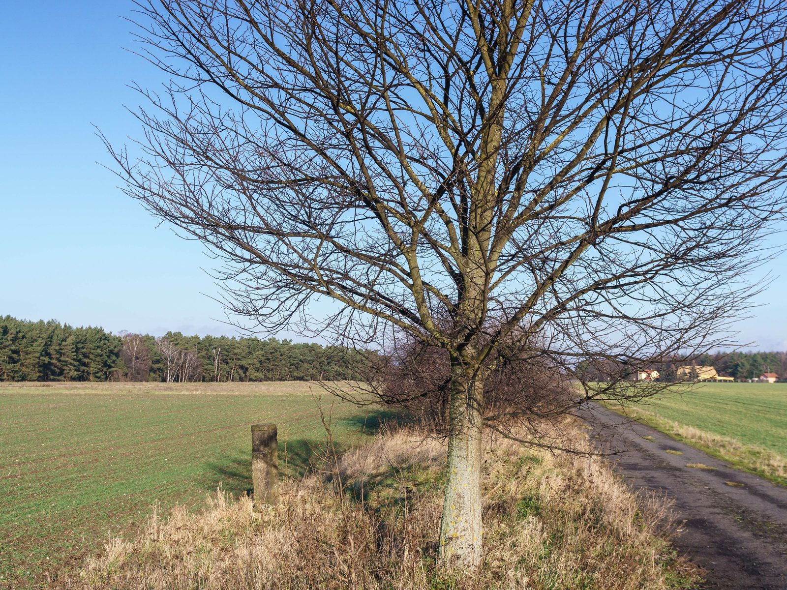

Gemeinde Doberschütz
Sechs Ortschaften, elf Ortsteile, 77,79 Quadratkilometer am Südrand der Dübener Heide. Eine Verwaltung für alle.
Rathaus Doberschütz
Montag 9–12 Uhr · Dienstag 9–12 und 13–17:30 Uhr · Donnerstag 9–12 und 13–15 Uhr
| Montag | 9:00 – 12:00 Uhr |
|---|---|
| Dienstag | 9:00 – 12:00 Uhr 13:00 – 17:30 Uhr |
| Mittwoch | geschlossen |
| Donnerstag | 9:00 – 12:00 Uhr 13:00 – 15:00 Uhr |
| Freitag | geschlossen |
Außerhalb der Öffnungszeiten sind Termine nach telefonischer Absprache möglich. Feiertage sind in der Anzeige oben nicht berücksichtigt.
- Anschrift Breite Straße 17
04838 Doberschütz - Telefon 034244 5400
- E-Mail info@doberschuetz.de
- Fax 034244 50344

Wegestein bei Bunitz. Zwei solcher Steine stehen als Kulturdenkmal in der Gemeinde – Bunitz und Mölbitz. Sie taten zwischen den Dörfern das, was diese Seite tun soll: sagen, wo es langgeht.
Was möchten Sie erledigen?
Die häufigsten Wege
Sechs Anliegen machen den größten Teil der Anrufe im Rathaus aus. Hier steht, wer zuständig ist und wohin Sie müssen.
Sechs Ortschaften, elf Ortsteile
Eine Gemeinde aus lauter Dörfern
Battaune, Doberschütz, Mörtitz, Paschwitz, Sprotta und Wöllnau haben sich am 1. Januar 1996 zur Gemeinde Doberschütz zusammengeschlossen. Jede Ortschaft hat bis heute ihren eigenen Ortschaftsrat.
Aus dem Rathaus
Bekanntmachungen und Sitzungen
Amtsblatt der Gemeinde
Das Amtsblatt erscheint seit dem 14. August 2015 im vierzehntägigen Rhythmus, elektronisch und auf Papier. Rechtlich verbindlich ist nach der Bekanntmachungssatzung die elektronische Fassung. Es lässt sich als Newsletter abonnieren.
Ratsinformationssystem
Tagesordnungen, Beschlussvorlagen und die Bekanntgabe gefasster Beschlüsse stehen online. Der Gemeinderat tagt öffentlich.
Hinweis zu diesem Entwurf: Amtliche Bekanntmachungen und Gebührensätze sind hier bewusst nicht übernommen. Sie haben Rechtswirkung und gehören in die Hand der Verwaltung. Der Entwurf zeigt nur, wo und wie sie stehen würden.
Läuft gerade
Kommunale Wärmeplanung
Die Gemeinde muss nach dem Wärmeplanungsgesetz einen Wärmeplan aufstellen. Bund und Land fördern ihn, ein beauftragter Dienstleisterverbund erarbeitet ihn – und die Zwischenergebnisse werden veröffentlicht, damit Sie sie kommentieren können.
In den Orten
Nächste Termine
Aus dem Veranstaltungskalender der Gemeinde. Ohne Gewähr – der amtliche Kalender steht auf doberschuetz.eu.
- Dorffest Sprotta bis Sonntag, 23. August · Sprotta
- Flohmarkt im Gut Heideck Sprotta-Siedlung
- Dorfkonzert „Die Schwarzen Optimisten“ 15:00 Uhr · Doberschütz
- Stoppelfest mit Fackelumzug bis Sonntag, 6. September · Doberschütz
- Sitzung des Gemeinderates 19:30 Uhr · öffentlich
Nicht bei uns
Dafür ist jemand anderes zuständig
Eine Gemeinde mit 3.985 Einwohnern erledigt nicht alles selbst. Diese Wege führen aus dem Rathaus heraus – und sind trotzdem der kürzeste Weg zum Ziel.